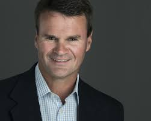

Who We Are
How Are We Different?
W e develop a thorough understanding of the goals and desires of our clients, then construct a plan to position each family for a successful outcome. We seek deep and long-lasting relationships with each of our families so we can respond to changes and events with the benefit of historical context and a high level of continuity and consistency.
Each family, regardless of amount of assets, can experience a customized relationship with Tranquility Partners based upon their unique needs and objectives.
Tranquility Partners works collaboratively and efficiently with each family's other valued professional advisors, including lawyers and accountants, to provide a single source of monitoring and tactical financial decision support as circumstances change.

CEO
Jim has more than 30 years of experience in the financial services industry. He served as co-founder and President of Teleion Capital LLC, where he managed an equity fund from 2002-2011. Before 2002, Jim was Managing Director of Healthcare Equity Research at Raymond James (RJ-NYSE). After graduating from Vanderbilt University with a BA in Economics, Jim began his career at Equitable Securities (later acquired by SunTrust), ultimately serving as Managing Director and head of Healthcare Research and Co-Director of Equity Research and was a member of the firm’s Commitment, Investment Policy, and Management Committees. Jim currently serves on the Board of Advisors of Nashville Capital Network and the investment committees of NCN Angel Fund II LP, NCN Partners Fund, and NCN Fund IV. Jim also actively manages family investments in public and private companies. He has served on the board of directors of Independence Trust Company and Neighbor MD.
Principal and COO
John has over 25 years of operating and financial experience in high-growth companies in healthcare operations management, operations restructuring and performance improvement, and mergers and acquisitions. He has significant experience with high-growth businesses and has served in key leadership positions for numerous public and private healthcare services companies. John graduated with a BS – Business Administration degree from the University of Arkansas in 1980, then began his career as a CPA (currently inactive status), serving clients for nine years at Peat, Marwick, Mitchell & Co. (KPMG). He has served on the board of directors for several non-profit organizations in Nashville. John has earned the designation of Chartered Financial Analyst® from the CFA Institute.*
SVP of Trading and Operations
April has more than 20 years of experience in the financial services industry. From 2001-2016 she worked at Avondale Partners, where she was head of their operational and settlements area and assistant trader. Before joining Avondale, April was a trading assistant at SunTrust Equitable Securities. She oversaw trade settlements and had additional back-office responsibilities. She started her career at Invest Financial, where she worked in the back office, compliance, and customer service for over 400 series six representatives.
Senior Vice President
Jordan graduated magna cum laude from Rhodes College with a BA in Business and Economics in 2019. While at Rhodes, Jordan competed on the varsity baseball and track & field teams. He was a member of the Omicron Delta Epsilon economics honors society and the Rhodes Organization of Investors and served on the leadership team with Campus Outreach. Before joining Tranquility Partners in 2019, Jordan worked as a research analyst with Chickasaw Capital Management, a $5 billion Master Limited Partnership investment manager in Memphis responsible for managing the MainGate MLP Fund (IMLPX-NASDAQ). Before Chickasaw, Jordan worked for Southern Growth Studio, a consulting firm in Memphis, conducting market research.
Vice President
Jay graduated cum laude from Rhodes College with a BA in Business and Economics and a minor in Computer Science in 2017. During his time at Rhodes, Jay competed on the varsity Track & Field team and was an All-Conference Sportsmanship recipient. He was a member of the Rhodes Investment Group and joined Tranquility Partners after graduation.
Vice President
Tyler joined Tranquility Partners in 2021 and has spent the past several years helping families design clear, tax-efficient plans to grow and preserve their wealth. He brings a disciplined, client-first approach grounded in both analytical thinking and strong relationship building.
Senior Associate
Nathaniel graduated summa cum laude from Grove City College in December of 2023 with a BS in Business Statistics and a concentration in Finance. Before transferring to Grove City College, Nathaniel attended and played baseball at the University of Maryville, Saint Louis, MO, but a series of injuries cut his baseball career short.
*CFA Institute is the global association of investment professionals that sets the standard for professional excellence and credentials.
Our Team Is Here To Serve You
We want to help you and your family achieve your financial and wealth transition goals and objectives. Please contact us anytime to discuss your needs and any modifications to your desired outcomes.
CONTACT A TEAM MEMBER